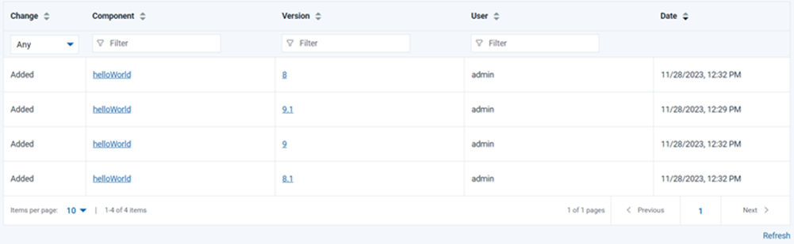

Viewing snapshot history
You can track changes to component versions included in a specific snapshot from the Changes tab.
Before you begin
About this task

You can view the following changes for a snapshot:
- Whether the version is added or removed.
- Impacted component name.
- Impacted component version.
- User responsible for change.
- Time and date of the change.